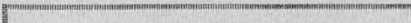
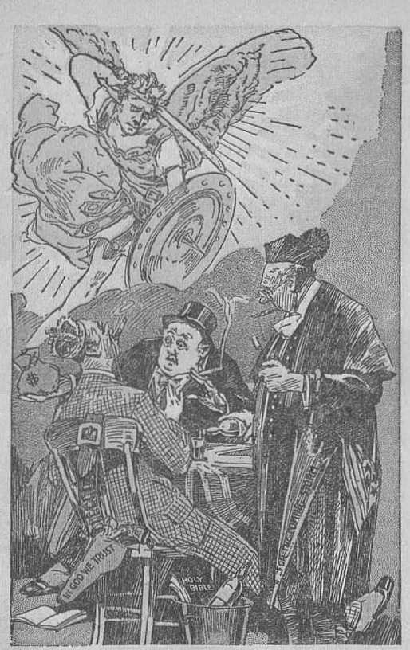
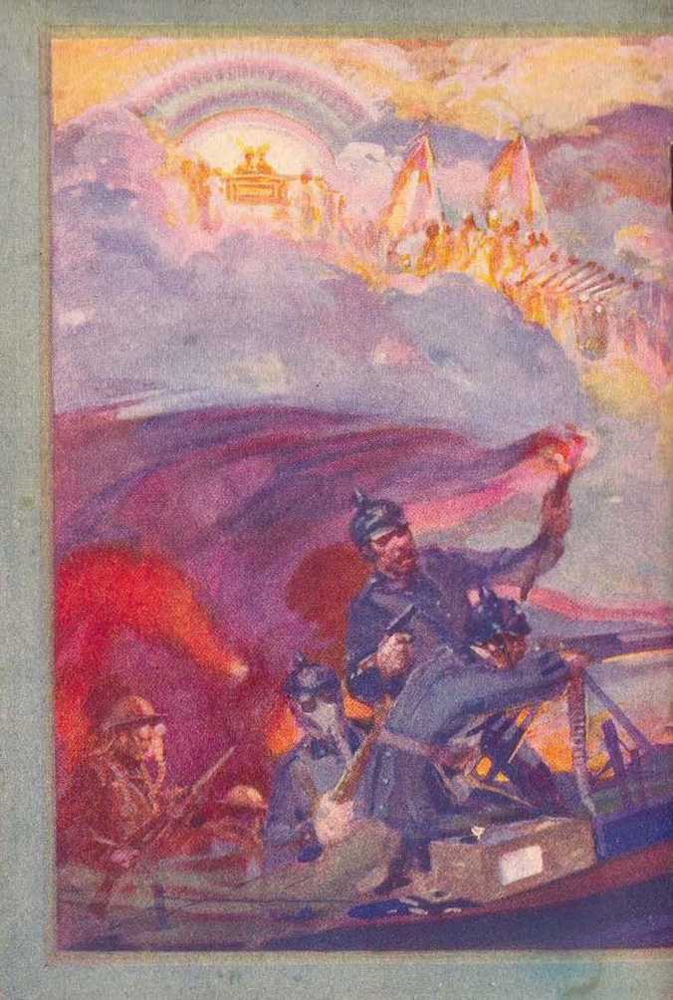

A.D. 33
explained in Three Bible Treatises by
J. F. RUTHERFORD
Page
3 Preface
5 Can the American Government Endure?
29 Jehovah’s witnesses: Why Persecuted?
50 Love
In a year of world depression, 1932, Judge Rutherford’s books and booklets announcing Jehovah’s kingdom were distributed to the extent of 22,213,639 copies. In but ten years his publications now in the hands of the people have reached a circulation of upward of 130 million pieces of literature.
Copyrighted 1933 and Published by WATCHTOWER BIBLE AND TRACT SOCIETY International Bible Students Association Brooklyn, N. Y., U. S. A.
Branch Offices:
London, Magdeburg, Paris, Toronto, Strathfield, Capo Town, Berne, Copenhagen, Stockholm, and other cities.
Made in U.S.A.
TIE LECTURES of Judge Rutherford, broadcast over many radio stations, have created a world-wide interest. This booklet contains three of such lectures. Because it is appropriate the title given to the booklet is THE CRISIS. A crisis means a turning point marking the end of a bad condition and the beginning of a better condition. All persons of good will gladly welcome such a change.
For many years the people of America pointed with pride to this nation and declared it must endure for ever. In more recent years conditions have grown very oppressive and unhappy and many have wondered as to the reason why. The radio lecture "Can the American Government Endure?” brings the matter squarely before all thinking people. Therein is produced the evidence showing the reason why the American government cannot endure. It discloses the reason for oppression and suffering, why it must end, and why it will be succeeded by a better condition. It is not the expression of a man’s opinion. Based upon the indisputable evidence it shows that the crisis of the American government is now at hand. Study it carefully, together with your Bible, and you will appreciate the force of the argument.
preface
For more than eighteen centuries the true followers of Christ Jesus have been persecuted because of their faithfulness to God. Many have wondered why this persecution should come upon those trying to serve the Lord. A crisis has now come when persecution shall cease and all shall know that Jehovah is God and that his kingdom is at hand. The lecture '‘Jehovah’s witnesses: Why Persecuted?” will open your mind to the true situation and disclose that those, who serve God’s kingdom have and exercise true wisdom.
From time immemorial selfishness has dominated the world and has caused great suffering. The very opposite of selfishness is love, which is properly defined as “the perfect expression of unselfishness”. A crisis has been reached in the predominance of selfishness, and now it soon shall cease and unselfishness shall rule the world, bringing comfort and peace to the people. Those who live on earth will learn to do right. The Contents of this booklet will give you real consolation.
The Publisher
FOR more than a hundred years America has stood in the very foremost rank of the governments of the earth. In natural resources America is today the richest country under the sun. The United States and Britain constitute the two pillars of the great seventh world power, which power is described in divine prophecy as the double or twofold government. Both nations claim to be Christian, and they form the chief part of the realm called “Christendom”, but, in fact, Satan is their invisible ruler and god.
The. founders of the American nation desired greater freedom than they possessed. That they might be free and independent of cruel and oppressive rulers they fled from Europe, and established the American republic, to which nation men have long pointed with pride. When the nation was young many of her statesmen were patriots, because they loved their fellow men and honestly and valiantly contended for a just government. Today there is no true patriotism among the rulers of the nation. It is now impossible for the people to elect men to public office and to expect them to enact just laws and to administer the affairs of the government for the general welfare.
The three visible elements of men that rule the nation are, to wit, the commercial, the political, and the religious, and of these three the commercial is the most powerful. Among the earlier statesmen of America there were some God-fearing men who foresaw the advance of a mighty and selfish power and gave warning that the greedy would some day destroy the liberties of the people. That warning was unheeded, and the selfish, commercial element, which is otherwise called “Big Business”, has stealthily and constantly moved forward to its goal. With grasping arms like the tentacles of a mighty octopus it has laid hold upon practically all of the visible wealth of the nation. At the same time the men who by laborious efforts have developed the country and produced the wealth of the land have been unjustly treated and robbed, and today they are crying for bread, and that in a land of boundless plenty. Many Americans in sorrowful tones are now asking the question : Can the nation of America long endure while such unjust conditions exist?
Big Business has no regard for the rights of the common people. The Civil War of 1863 was fomented and carried forward for the purpose of creating a condition by which Big Business could obtain a strangle hold upon the nation. To free the land from the traffic of human flesh and blood was the ostensible reason for that war, but the real reason was to enable a selfish company to control the finances and all the business interests of the nation. In 1917 Big Business, for ultrasclfish reasons, needless-
tl
CAN THE AMERICAN GOVERNMENT ENDURE? 7 ly and wantonly forced the American nation into the World War, which resulted in the greatly increased wealth and power of a few men and made serfs and paupers of many millions of people.
Today Big Business owns practically everything visible. By the manipulation of the finances of the nation Big Business has acquired title to almost all of the real estate, while hundreds of thousands of honest toilers are losing their homes and their land. A few ultrarich men fix the prices of the food produced by the farmers, and which food products are reaped down by laborers; and by reason thereof the fanners are robbed and the laborers are caused to starve, and that within the borders of the richest nation of the world.
Big Business owns the ships that ply the seas, and that fly through the air. It owns and controls the railways and other ways and means of transportation. Big Business has acquired the preferred securities of the public carrier corporations, while some of the common people hold the less desirable stocks and securities. When the railways were recently pressed for money to pay the interest on their preferred securities Big Business caused the American government to advance a hundred million dollars to the banks upon the pretext of helping the banks to thaw out their frozen assets and to stimulate business immediately, but instead of so using that money Big Business immediately absorbed the entire hundred million and ap-
plied it to the payment of interest on the preferred securities which it held.
Big Business, which is composed of a very few men, owns and controls the telegraph and telephone lines, the radio, the electric and power lines, and it owns and controls the mines that produce the fuel and the building material which all the people are compelled to use. It owns and controls the banks and most of the money that is in them. It is in possession of the greater portion of the gold that rightfully belongs to the government. The factories and the great mercantile establishments are owned and controlled by the same selfish interest.
Big Business has in its employ the most astute lawyers of the nation, who write the contracts always in the interest of their clients, and the common people must take the ragged end. Every branch of the government is contaminated and improperly influenced by Big Business. It controls the two major political parties of America and names and elects at will the public men to office who will best serve its selfish interests. Big Business controls the army and the navy, the guns and the ammunition, and the police power of the nation.
Practically all of the business corporations of America are owned or controlled by Big Business. The employees of these mighty corporations have a hook in their nose, so to speak, and they dare not call themselves their own. They must obey the selfish men who are the mighty lords of finance or else lose their jobs. They need their salaries to feed and clothe themselves
CAN THE AMERICAN GOVERNMENT ENDURE? 9 and their families; hence they are at the mercy of Big Business and are therefore serfs.
Big Business either directly or indirectly owns or controls almost all of the newspapers and magazines of America, and which agencies serve as propagandists for Big Business and their immediate political and religious allies. The same selfish interests own and control the professional clergymen, and these men make merchandise of the Word of God in order to keep the people in ignorance and in subjection to the ruling powers. Thus it is plainly seen that the power of the government is centralized in the hands of a very few.
In times past statesmen have warned the people of the danger that would result from the centralization of power in the hands of a few men. While the people have heard this warning, and many of them have sensed the advancing danger, they have been helpless to prevent what has come to pass. Today the common people are bound hand and foot. In 1917 the predatory element that rules the nation created the slogan, “The war will make the world safe for democracy,” and then caused its propaganda press and its hypocritical clergymen to sound this false slogan throughout the land. Now after fourteen years democracy has disappeared from the earth. There is at this very time a concerted movement by those few men who control the commerce of the land to have America ruled by a dictator, which means the setting aside of all constitutional law and the putting into force such orders as the dictator may deem
necessary. The public press has been instructed to diplomatically educate the people as to the necessity of a dictator before that step is actually taken and the dictatorial power disclosed. You have observed recently in the metropolitan press statements couched in guarded phrase advocating a dictator in America to control the affairs of the nation. From one of the well known magazines, dated June 25, 1932, I quote these words:
What could be done by a dictator with powers of a military nature? He would first make every possible effort to increase the confidence of men of affairs in the future of the country, to make business men everywhere realize that the government intended to encourage, assist, and protect them in every possible effort they might make.
This is a brazen statement made in the interest of the few and against the common welfare of the many. Big Business maintains paid lobbyists at Washington, which lobbyists conduct also a bureau of information for the special benefit of their employers. Each week a letter goes from that bureau of information to the executive heads of Big Business corporations. From one of these communications, dated May 14, last, I quote the following:
It is beginning to be apparent that some substitute for a coalition government will have to be formed to handle the situation after adjournment of Congress. . . , There are several plans, but one revolves about the idea of assembling in Washington, or subject to quick call, a group of a dozen or more men. ... Die-
CAN THE AMERICAN GOVERNMENT ENDURE? 11 Dictatorship, which is being advocated more from week to week, would be avoided, but some of the practical merits of dictatorship would be obtained. At least this is the hope behind the idea, which is an adaptation of the set-up represented by the war-time Council of National Defense. . . . One practical objection is that the public might be unduly alarmed by implications in the summoning of a council of advisers. . , . We have reason for believing the plan will materialize, and we advise you [executive business heads] in advance to consider it a good sign.
The information is provided for only corporation executives, and not intended for publication. These secret communications disclose in advance the action that Congress will take, what Bills it will pass, and what it will not pass; and by watching the public press it is seen that these predictions come true. This is one of the evidences that men elected to public office represent the predatory interests and not the common people. This and other facts show that the rulers are greatly perplexed anj proceeding with much fear.
I am not taking sides in politics. I am merely calling attention to the facts, that I may in a moment cite Jehovah God’s prophecy applying at this very hour and which discloses the cause of the present trouble and what is the only possible remedy. In the language of the second Psalm of the Bible I ask the powers at Washington to give heed to the Word of Jehovah God and be wise. Likewise I ask the people to hear and give consideration to what the Word of God has to say on this matter, because under the
rulership of a dictator the opportunity to use the radio to tell you of the great truths of God’s Word, which are now vital to all, may cease for ■ a time.
In recent months Jehovah’s witnesses by radio and by calling at the homes of the people have repeatedly directed attention to the Bible testimony which shows that Jehovah God foretold the present distress and perplexity that is now upon the world, and the cause, and what will be the result. Their only purpose in so doing lias been and is to inform the people for their own well-being, in obedience to Jehovah’s command. (Isaiah 43:9-12; 6:1-11) Their efforts to thus inform the people of the truth, which is vital to be understood at this time, have been bitterly opposed by the hired clergymen, who have also enlisted the cooperation of the police power to keep the people in ignorance. Now as I have opportunity, I plead with the rulers and with the people to hear the voice of Jehovah God as set down in the Bible centuries ago, foretelling these conditions and pointing out the way of escape. Whether you do take heed or not, the responsibility is yours.
Well do you know that fear has laid hold upon almost everyone. You see this manifested by government officials, bank officials and employees, by business men and farmers, by professional politicians, clergymen and the common people. Why is there such great fear and perplexity amongst the rulers, and distress amongst the people everywhere? Jehovah God’s Word at Luke, chapter twenty-one, states that this
CAN THE AMERICAN GOVERNMENT ENDURE? 13 very time o£ crisis would come upon the world, and that when it arrived there would he "upon the earth distress of nations, with perplexity; . . . men's hearts failing them for fear and for looking after those things which are coming on the earth: for the powers of heaven shall be shaken”. "The powers of heaven” means Satan’s invisible organization, the members of which know the great crisis is here. What is the cause of this fear and perplexity, and which the public press designates “lack of confidence”? The Word of Jehovah God answers the question in plain phrase. Then why not let the people know what that answer is? Because Satan the invisible ruler of this wicked world wishes to keep the people in ignorance of and away from Jehovah, and to do this Jehovah’s witnesses are put in jail.
Men of Big Business and their “stnong-arm squad” are reprehensible before God for hindering the witnesses of Jehovah in telling the people the truth, but the clergymen are far more reprehensible and responsible, because these “gentlemen of the cloth” have held themselves out as teachers of the Bible, thereby misleading the people, and have refused to teach the people the Bible themselves, and they oppose others who do teach it. Why then has this terrible condition of distress and perplexity come upon the world at this time, including the fair land of America? Jehovah’s Word at Revelation, chapter twelve, answers: “Woe to the inhabiters of the earth, and of the sea! for the devil is come down unto you, having great wrath, because he
knoweth that he hath but a short time.” Satan’s world ended in 1914, that point being marked by the beginning of the World War. Satan, as Jehovah bad foretold, was then cast out of the heaven, and from that time forward it is but a short time until the final destruction of his organization, and until the full and complete establishment of Jehovah’s government of righteousness. Never was there a truth so important as this for the people to know and to learn now.
For many centuries Satan has been the invisible ruler of this world. He has blinded men to the truth and has subtly influenced others to do his bidding. Satan is the author and organizer of the cruel and oppressive commercial Big Business system that rules the world, He has used commerce, politics and religion that he might get complete control of the human race and defame the name and word of Jehovah God. For this reason, it is written in the Bible (1 John 5:19), ‘the whole world is now under the wicked one.’ It is also stated (2 Corinthians 4: 4) that Satan is the god or invisible ruler of this world, and the one who blinds the people to the truth. He uses various instruments to accomplish this purpose. Satan, knowing that the time approaches when he must make his last stand, is now desperately trying to stampede every creature into his own camp and into a position against Jehovah and His kingdom. Within a short time Jehovah God will destroy the Devil and his entire organization.
But why did not God destroy Satan the Devil long ago, and thus prevent so much wickedness
CAN THE AMERICAN GOVERNMENT ENDURE? 15 in the earth? Bear with me, please, while I give the Scriptural answer. When Satan beheld the perfect man and woman at Eden, and knew that they were endowed with power to multiply and fill the earth, commerce had its birth in his selfish mind. He saw that in the future, with the human race in his power, he could build a mighty machine of commerce, politics and false religion, and thereby gain control of the people and defame the name of Jehovah God and make himself, Satan, the most important one. For this reason he challenged Jehovah God to put on earth men that would remain true to Him under adverse conditions. Had Jehovah refused this challenge and immediately destroyed Satan there would not have been an opportunity afforded to prove to all creation that Jehovah God is the Supreme One, that he is the Giver of life and all other blessings, and that his name is above all and worthy of praise. Jehovah accepted the challenge and permitted Satan to proceed in his effort to prove his boast. At the same time Jehovah informed Satan and man that when the due time would arrive Jehovah God would destroy Satan and all of his works. (Genesis 3:15-17; Hebrews 2:14; 1 John 3: 8; see Light, Book Two, pages 184-193, 206-220) Satan’s first world power was commercial and military Egypt. Jehovah sent his chosen people the Israelites to sojourn in that land. The Egyptian government oppressed God’s people. In due tune and after full warning to the Egyptian rulers Jehovah delivered his people from that land of oppression and destroyed the Egyp-
w tian rulers. The Scriptures plainly point out that such was an illustration of what Jehovah God will shortly do to Satan and his entire organization that rules the world. Pharaoh the king of Egypt pictured Satan the Devil, and the Egyptian nation pictured or foreshadowed the present nations of the world; while the Israelites pictured the order-loving people who desire to be on the side of God and righteousness. Now in the language of the Scriptures I answer the question specifically as to why Jehovah God has permitted Satan and his wicked workers to exist for such a long period of time, and which answer God caused Moses to write, at Exodus 9:16 (Leeser), to wit: “But for this cause have I allowed thee to remain, in order to show thee my power; and in order that they may proclaim my name throughout all the earth.” To for ever settle the question of supremacy Jehovah has permitted Satan to go on in wickedness until due time to destroy him and his wicked organization and thus prove that Jehovah is the supreme and eternal God. That time of crisis has now arrived, and Jehovah’s witnesses are proclaiming his name through the earth.
Jehovah is the Creator of heaven and earth and the Giver of life. All his ways are just and righteous, and no one can enjoy the blessings of eternal life and happiness except at the hands of Jehovah. The name of Jehovah God is most important of all. His name has for centuries been defamed. The time has come to vindicate his name, and to place in the minds of the peo-
CAN THE AMERICAN GOVERNMENT ENDURE? 17 pie the proper understanding and appreciation of his name. The defamation of God’s name has been brought about by Satan and his great commercial organization, aided and abetted by the political power, acting in conjunction with the false and hypocritical religious leaders who falsely charge Jehovah God with responsibility for human suffering. Satan’s organization oppresses the people, and at the same time the preachers or clergymen tell the people that the nation of America and other like nations rule by divine right, are Christian nations, and hence exercise power in harmony with the will of God-Lor this, amongst other reasons, the clergy, while claiming to represent God, in fact represent the Devil and his organization. In order that the people might hear the truth and determine this matter for themselves, recently I challenged the combined clergy of America to select their best man to debate this question by radio. Charged with misrepresenting God and serving Satan, these gentlemen should either come forward and prove the falsity of the charge, or, failing in that, should cease to hold themselves out as teachers of the Word of God. Jehovah foretold the outcome of such a challenge and the attitude that would be assumed by the preachers, when he caused his prophet Jeremiah to write, at chapter fifty-one, verse thirty: “The mighty men of Babylon [Satan’s organization] have forborn to fight, they have remained in their holds: their might hath failed.” Let tire people take note of this fact.
The greatest crisis of the ages is now upon the world, and this includes the American government. The power of Satan’s earthly government is now centralized in the hands of a few. Seeing that a great crisis is at hand, even these rulers are in.great fear and perplexity; hence they evolve and announce many schemes. But no such schemes can pull the nation out of the present dilemma. The rulers have been duly informed and duly warned that Jehovah God’s kingdom is here. They have refused to give heed. They disregard the Word of God and go on with their imperfect schemes, and will continue to try one after another, all of which shall fail, I venture the opinion that the American government will be ruled by a dictator, aided by a company of advisers that are selected and directed by the chiefs of Big Business. Such will be a military rule and one to which the people will he compelled to submit.
In 1917 millions of young men were forced into the military ranks at the instance of Big Business. The lifeblood of more than a hundred thousand of these was spilled upon the soil of France in violation of Jehovah's everlasting covenant. {Genesis 9:1-17) Other thousands, returning to America, found themselves without a job and with no means of support for themselves and their families. And now after fourteen years thousands of those war veterans march to Washington and beg the government to feed them and their starving children. They ask for bread and receive a stone; they petition for meat and receive a deadly serpent. (Matthew 7: 9,10) Many are now asking: “Can the
CAN THE AMERICAN GOVERNMENT ENDURE? 19 'American government long endure under such conditions?”
Would a revolution relieve the people and pull the nation out of its present dilemma? I answer most emphatically, No, There is no man in America that could lead successfully a revolution. To undertake it would he worse than folly. Satan has seen to it that the power of the nation is centralized in Big Business and its allies. The army and the navy and the “strongarm squad” will do the bidding of Big Business, and the. people are powerless before them. A revolution would be a dismal failure and would accomplish no good results. Let thoughtful people who believe in what is right refrain from advocating revolution and abstain from all violence. No person who believes and serves Jehovah God will resort to violence. This is Jehovah’s fight.—2 Chronicles 20:1.5; 2 Corinthians 10:4.
Shall the cruel and oppressive commercial power selfishly and wantonly continue, to rule without limit? What shall the people do for relief? I strongly appeal to you to be calm and learn what Jehovah God has provided for relief and deliverance. By his Word the great Jehovah now speaks to the rich and oppressive ones who rule behind the throne of visible power, and says to them, as recorded in James 5:1,2: “Go to now, ye rich men, weep and howl for your miseries that shall come upon you. Your riches are corrupted, and your garments are moth-eaten.” How true is that statement of the Lord’s Word applied at this day. With all their wealth they are in fear and in perplexity, and they weep and howl because of the miseries that have now come upon them. They have the money, but they do not know what to do with it. Further addressing them Jehovah says (James 5:3): “Your gold and silver is cankered; and the rust of them shall be a witness against you, and shall eat your flesh as it were fire. Ye have heaped treasure together for the last days.” Heretofore I have pointed out from the Bible that we are now in the last days of Satan's rule and that God’s kingdom is at hand. The millions of people who once produced the wealth that others now have, and who are now without employment and without money, are crying for help. They are not crying to God, because the agents of Satan have kept them blind concerning the truth of God. They are crying because they have been robbed and defrauded, and their burdens are unbearable. Yet Jehovah hears their cries, even as he heard the cries of the oppressed in Egypt, and now further addressing the oppressors he says (James 5:4,5): “Behold, the hire of the laborers who have reaped down your fields, which is of you kept back by fraud, crieth: and the cries of them which have reaped [and have fought your battles] are entered into the ears of the Lord of [Battle]. Ye have lived in pleasure on the earth, and been wanton; ye have nourished your hearts, as in a day of slaughter.”
The invisible and visible armies of Satan and of Jehovah God are assembled now at Armageddon. Satan’s chief field marshal is called "Gog” (Ezekiel 38: 2) and is the one who commands the host of devils invisible and the powerful visible organization that is on the earth and under the hand of Satan, Jehovah’s chief field marshal is Christ Jesus, who leads and will lead the fight against the enemy. He is supported by legions of glorious spirit creatures that are invisible to man; while on earth there is just a little handful of men whom he uses, not to fight with carnal weapons, but to bear testimony and inform the people of what is coming and to point them to Jehovah God’s kingdom that will be their relief. Already Satan and his wicked forces under Gog, both invisible and visible, have formed a conspiracy and have begun the committing of overt acts against the faithful witnesses of Jehovah. The day rapidly approaches for the great conflict, and Jehovah God says to the enemy forces, as stated in the prophecy of Ezekiel (chapters 38 and 39): 'I am against you and all of your organization, and I will destroy you.’ (See Vindication, Book Two, pages 311-344.) Jehovah’s name shall be vindicated and all creation shall know that he is The God. Hence Satan and his entire organization must fall, and that includes the American government.
The people who are oppressed are powerless to deliver themselves, and they continue to cry. Some have assumed leadership amongst the people, and these advocate various schemes of relief, amongst which are communism, revolution and other deeds of violence. Their homes have been swept away from them. They have been robbed of their earnings. They are without employment and they see their children starving, and they have become desperate. Jehovah God by his prophet now addresses them and tells them to stand still and watch what he shall do. (2 Chronicles 20:15-17) He says, at Zephaniah 3:8: “Wait ye upon me, saith the Lord, until the day that I rise up to the prey; for my determination is to gather the nations, that I may assemble the kingdoms, to pour upon them mine indignation, even all my fierce anger: for all the earth shall be devoured with the fire of my jealousy.” Jehovah is the God of battle, and, the time having arrived for the vindication of his name, he will fight the battle of Armageddon for his own name's sake; and it will result in the complete destruction of oppressive powers and the deliverance of the people. There is no need to seek for or look for any other way out of the dilemma, because there is none other. Those who love God would not wish to find any other, because they know what Jehovah does is done right and in the interest of righteousness.
For the information of those who love God and who would know him and his righteous way, he has caused to be recorded in the Bible illustrations of the great and final battle now approaching and during which the nations of this earth shall fall. The eighty-third Psalm describes the enemy’s organization under Satan led into action by his chief officer Gog. Then the psalmist, as Jehovah’s faithful representative, says (Psalm 83: 2,3, 5, 9): “For, lo, thine enemies make a tumult: and they that hate thee have lifted up the head. They have taken crafty counsel against thy people, and consulted against thy hidden ones. For they have consulted together with one consent: they arc confederate against thee. Do unto them, as unto the Midianites; as to Sisera.” Satan’s organization is described here under the names of Midianites and Sisera; and concerning the battle in which Sisera was destroyed it" is said, in Judges 5: 20: “They fought from heaven; the stars in their courses fought against Sisera.” The "stars” picture the invisible army of Jehovah God, which army will do the destructive work at Armageddon, and against which Big Business and all military powers of earth can do no hurt. Christ Jesus, in Matthew, chapter twenty-four, describes that battle as the worst trouble that will ever have afflicted the world and that it shall be the last. That battle is near.
The responsibility of nations before God is in proportion to the light and favorable opportunities afforded those nations to learn righteousness and deal justly. America and Britain are the leading nations of the realm called "Christendom”. The light and favor of Jehovah has been greatest to them, and hence responsibility is far greater upon these than upon any other nations of the earth. There has been more hypocrisy practiced and more blood unrighteously shed in these nations than in any other under the sun. Why will Jehovah destroy these nations?
The Bible answers; Jerusalem was a type of "Christendom”. It was in Jerusalem that Jesus, the Son of Jehovah God, was foully murdered and his disciples were persecuted to death. Jerusalem was completely destroyed. During the World War it was the seventh world power that led in the persecution of the faithful followers of Christ Jesus. It is in America that Jehovah’s witnesses are now cruelly persecuted because they insist upon informing the people of God’s kingdom, which is the only hope for human relief. This persecution of Jehovah’s witnesses is led by the clergymen, the same class of men that persecuted Jesus to death. If Jesus were to walk into Washington today [June 26, 1932] and mingle with the suffering veterans in their camp he would be denounced by the clergymen as a man of low civilization. It is this same class of clergymen and political lobbyists that recently adopted a resolution, which appears in the Washington Herald under date of June 10, 1932, declaring that Christ Jesus belongs to a lower civilization.
The Scriptures use the word "inhabitants” as applying to the rulers who have ruled the earth as Satan’s representatives. In Isaiah (24:5,6) Jehovah says: "The earth also is defiled under the inhabitants [rulers] thereof, because they have transgressed the laws, changed the ordinance, broken the everlasting covenant. Therefore hath the curse devoured the earth, and they that dwell therein are desolate: therefore the inhabitants [rulers] of the earth are burned, and few men left.” That means that the present unrighteous rule of this earth shall cease by the hand of Jehovah; and the greatest
CAN THE AMERICAN GOVERNMENT ENDURE? 25 trouble will be upon "Christendom”, which includes America.
This speech is not made to disturb the people, but to inform them that there is hope of complete relief in Jehovah’s provision. If you believe that the Bible is God’s Word, then study it in the light of present-day events. This speech is not made as a warning to the rulers. They have already received notice of the approaching world storm, and instead of giving heed thereto they go on with their abortive schemes. Concerning this, Jehovah, at Psalm 82:5, says: "They know not, neither will they understand: they walk on in darkness: all the foundations of the earth are out of course.”
But why do I state that complete relief will follow the downfall of "Christendom”, including the American government? I answer, Because Jehovah God says so. In Zephaniah 3:8 he declares his purpose to destroy Satan’s organization, and then, in verse nine, says: “For then [after the destruction] will I turn to the people a pure language [of counsel and advice], that they may all call upon the name of the Lord, to serve him with one consent.” All shall then know that Jehovah is the Supreme God.
For centuries Satan has been the invisible ruler of the nations of the earth, and Satan is the greatest enemy of God and of man. Satan has caused the people and the rulers to be blinded to the truth. God has not heretofore interfered with his wicked work, but now the time has Come when Jehovah will interfere and will destroy Satan and his organization and vindi-
cate His name. The world henceforth shall be ruled by his righteous Son Christ Jesus, That government shall be upon his shoulders, and of the peace and prosperity thereof there shall be no end. (Isaiah 9:6,7) Then the people will know the truth, and, as God’s Word declares, the people shall say: ‘Come, let us go up and put ourselves under the government of the Lord, and he will teach us the right way’; and then they will cease from war and strife and dwell in peace for ever.—Isaiah 2: 2-4.
Jehovah made this earth for man to live upon in peace and plenty, health and happiness; and under the reign of Christ, he declares, the earth shall yield her increase and God shall bless the people, and all in the earth shall know him, (Ps. 67: 6,7) Christ is the invisible Ruler of the new world, but he will have on earth true and faithful men who will honestly and faithfully carry out his orders. Those men have already proved their faithful devotion to God: Some of them are named in the eleventh chapter of Hebrews ; and in the forty-fifth Psalm the Lord declares they shall be the rulers in all the earth. In Isaiah 32:1 it is written: “Behold, a king shall reign in righteousness, and princes shall rule in [justice].” The duty and obligation laid upon Jehovah’s witnesses now on earth is to bring this information to the attention of the people. They are not seeking or expecting personal gain or the approval of men. They are joyfully obeying the commandments of Jehovah God.
From the Word of Jehovah I specifically answer the question “Can the American govern-CAN THE AMERICAN GOVERNMENT ENDURE? 27 ment endure?” And that answer is emphatically, No ! The terrible suffering, distress and unrighteousness now prevailing in this land of plenty should be sufficient cause for sober-minded persons to consider the reason and the remedy therefor, all of which information is clearly set forth in the Bible. Those who will escape and be brought through to safety in this approaching time of greater trouble will be those who heed his Word and who take their stand on the side of Jehovah, because he so states, in Zephaniah 2:2,3.
Jehovah’s witnesses are your friends because they bring to you the information of how you may receive complete relief. We should expect Satan and his agents to do everything possible to prevent this information from getting to you; and that is exactly what they are doing. For your own sake, and that you might know the way that leads to life, peace and happiness, I plead with you in this hour of great crisis to study the Word of God. All efforts put forth by men or earthly organisations of men to relieve the people must fail, and the great trouble upon the world must come, because Jehovah God has decreed it so. When the wicked, cruel and oppressive organization of Satan has ceased to exist, and when you see and experience the righteous government of the world under Christ, the Prince of Peace, and the blessings that flow from that just rule, you will forget. the distress that you now have, and you will rejoice and give praise to him who is the Giver of every good and perfect gift.
The American government has been weighed in the balance and found wanting. It cannot endure. Together with all other nations, it soon shall fall. Such fall will be in spite of everything Big Business, politicians and clergymen, the military and the "strong-arm squad”, and the Devil and all of his hosts can do to hold together the oppressive rule. It must and will fall because Jehovah God’s kingdom is here. Hasten now to take shelter under Jehovah’s kingdom.
Under the righteous rule of Jehovah’s kingdom you will enjoy the fruits of your labor. Your wives and your babies will be housed and fed, and you will dwell in peace and happiness and health upon the earth for evermore. (Micah 4: 2-4) I bid you, therefore, to be calm, refrain from violence, trust in Jehovah God, and wait for the salvation and peace and endless joy that his kingdom will bring to the now suffering millions who are obedient to him. The kingdom of God is solely your hope. Your greatest Friend is JEHOVAH GOD.
After reading such a stirring lecture would you not i like to know more about God’s kingdom! Judge Ruther- | ford has written numerous books and booklets giving i | you the details concerning Jehovah’s purposes as eet i | forth in the Word of God. If you desire to read more f | after finishing this booklet, may we suggest that you now | I write the Watch Tower, asking for their free booklet | | describing in detail all of Judge Rutherford’s writings. | Ilt is yours for the asking.
The Publishers
■uinitnunicriiuaiiiuuiiiiiimiiiiiHtitiuiiiBuiutiu>iiuiiiitntuiiiiwiiiitHiutHtmwnnittmuuiiitutiiuhiiitniiiiiii'iiwi«4uuiuiiiMiBi«murtiii»ii'iiiiMi»S
THE purpose of this speech is to tell the people the truth that is of vital importance to them and which they are entitled to hear. The purpose is not to provoke a controversy; but if the truth can be told only by having a controversy with those who oppose the truth, then the responsibility for that controversy is upon the opposers or wrongdoers. Ultimately these opposers will have to answer before the court of the Almighty God for their wrongdoing in opposing the proclamation of the message of his kingdom. They are not fighting against men merely, but against the King of Eternity.
Recently in the towns of Bergenfield, Asbury-Park, and Ocean Grove, New Jersey, and in divers places in Pennsylvania and Connecticut, and other places, good men and women while engaged in an effort to do good, and while bringing comfort to the people now in distress, have been ruthlessly arrested, cursed and abused by officers, and otherwise ill-treated, and thrown into dungeons. Thousands of other fair-minded persons, shocked and stunned by such wrongful acts on the part of public officers, have made inquiry as to why these harmless men and women are thus persecuted. I have been asked to broadcast the answer to that question and I am thankful for the opportunity so to do.
These men and women who have been thus arrested and persecuted are Jehovah’s witnesses engaged in the performance of their lawful and rightful duties. Who is Jehovah? He is the great God of the universe, the Creator of heaven and earth, the Giver of everything that is good, and whom every person must know and obey in order that they may live.
Nineteen hundred years ago, when the babe Jesus was born at Bethlehem, Jehovah’s angel from heaven declared this message: 'Behold, I bring you good news of great joy which shall be unto all people; he who is to be the King of the world is born, and he will bring peace on earth and good will toward men.’ (Luke 2:9-11) Since then those who love God and his righteous government have looked forward to the day of his kingdom and have rejoiced to tell others of its coming.
The time for the kingdom is now come. How may we know that fact? The Bible, at Matthew twenty-four, and at Luke twenty-one, gives the language of the Lord, who said that his coming and his kingdom would be ushered in at the time of great distress and perplexity on the earth, when men’s hearts are failing them for fear of what they see approaching, and that at such time wickedness would run riot. Everyone knows that exactly these conditions now exist all over the earth. In this connection and concerning this same time the Lord commanded his witnesses, saying to them: 'This gospel of the kingdom must now be preached or told to the people as a testimony to them.’ Those who love
JEHOVAH'S WITNESSES: WHY PERSECUTED? 31 God and obey his commandments have no alternative. Their life depends upon faithfully doing God’s will. They must tell the people the good news of the Kingdom, and they must and will do this as Jehovah’s witnesses, even at the cost of their lives.
no w ?
How are Jehovah’s witnesses to preach the gospel? In those latter days God has brought forward the radio, and by reason thereof some of the people are enabled to remain at their homes and hear a portion of the message concerning the kingdom broadcast to them. The people are anxious to learn more, and to this end to apply themselves to study. To enable the people to get a better understanding of Jehovah’s purpose to set up a righteous government and bless mankind the gospel or good news is printed in book form, and in obedience to his commandment and because of their love for God, and their desire to help the people, Jehovah’s witnesses now go from house to house and exhibit to the people books containing this message and thus afford the people an opportunity to study and to understand the Bible. In the same way Jesus and the apostles went from house to house teaching the people.
These witnesses of Jehovah receive, from the people a small amount of money in contribution to enable them to publish more books of the above kind. Are these men and women engaged in a book-selling scheme for pecuniary profit? Most assuredly not! They work in their shops or fields to earn their bread. They live in a frugal manner and then give all the time and money that they can spare to the preaching of the gospel of God’s kingdom. The cost of production and delivery is far in excess of the money received for the books. This deficit is made up by voluntary contributions by men and women who are anxious to do what they can to enlighten the people concerning God’s kingdom. It has been charged that I make a profit from the “sale” of these books, which charge is wholly untrue. Because I have written these books the copyright is taken in my name, and then immediately assigned to the publishing company without one cent of royalty to me. the consideration being that the message shall be delivered to the people at the least possible expense to them and that the poor shall receive the message of truth without money and without price.
Jehovah’s witnesses are not rich in this world’s coin, and therefore cannot make and supply so many books entirely free. The opportunity is therefore given to all who can, and ■who so desire, to use some of their own money to further the work of making known to their fellow man the good news of God’s kingdom. Every person who hears this good news and who has a sincere desire to see a righteous government for the people on earth wants to have some part in spreading this good news to others. This is one of the reasons why more than one hundred thirty million of these books have been placed with the families of the people during the JEHOVAH’S WITNESSES: WHY PERSECUTED? 33 past ten years, and many in these families have been greatly comforted and refreshed by this good news. There has never been a work on earth that has brought so much comfort to the people as this, for the reason that it is a work of bringing to the people the. truth concerning Jehovah God’s kingdom, which Kingdom is the only hope of relief for the world’s suffering millions. It is not a propaganda movement to obtain joiners, but wholly an educational work for the general welfare of the people.
KINGDOM BENEFITS
"Why is God’s kingdom so important to the people! In brief I answer that long ago God created man perfect. Man was induced to do wrong by God’s enemy, and which wrongdoing brought suffering and death into the. world, and all men have suffered since. Throughout the centuries a few of the strong have ruled and oppressed the weaker. The unrighteous have wielded the scepter of power and the meek have been compelled to submit. That unrighteous rule has reached a climax, and today in all nations the people are suffering. Nineteen centuries ago God provided redemption for mankind through the lifeblood of his beloved Son Jesus. Jehovah God gave his word of promise that in his due time he would set up a government of righteousness for man and that in that righteous government wrongdoing would be restrained and wickedness destroyed and that all who would learn the truth and obey the law of God’s kingdom should be restored to perfect health in body and mind, be provided with homes and plenty, and dwell in peace and prosperity upon the earth for ever. For this reason those who have believed the Bible have looked forward with great expectation to the time of God’s kingdom on earth. That time is here, and now Jehovah sends forth his witnesses with his message of truth, that the people may learn and be comforted and have hope. The importance of this message, therefore, cannot be overstated.
OPPOSERS
It is those humble men and women who love God and righteousness, and who as his witnesses are going from house to house with his message of hope, that are abused, arrested and persecuted. They are being thus wrongfully treated because they are the representatives and servants of Jehovah and are messengers of peace concerning his righteous government. It was Satan the Devil who induced man to sin. Satan is the opposer of God and of righteousness and lias long been the invisible ruler of the governments of this world. He declared his ability to induce all creation to turn against Jehovah. God accepted Satan’s challenge, at the same time declaring that he would in his own duo time establish a righteous government on earth under Christ, which righteous government would completely destroy Satan’s rule. For this reason he declared that he would put enmity between Satan and the seed of God’s kingdom. The issue was thus joined and since has been:
JEHOVAH’S WITNESSES: WHY PERSECUTED? 35 “Who is supreme, Jehovah God or Satan I” Jehovah has permitted Satan to go his limit in wickedness and misrule and oppression of the people, and now the end thereof has come. Satan knows this, and he uses his every power to blind the people to the truth and turn them against Jehovah God. Jehovah now sends forth his witnesses to serve notice upon the rulers of the world of his purpose shortly to destroy Satan’s rule and organization, and he commands his witnesses to tell the people the good news of their complete deliverance and blessing that shall shortly follow by and through the administration of his righteous government under Christ. Satan the Devil and all his agents therefore violently oppose those who represent Jehovah God and his kingdom, and for this reason Jehovah’s witnesses are being persecuted and thrown into prison.
In proof of the fact that Satan the Devil has long been and is the invisible prince or ruler of the nations of this world, and has induced his earthly representatives to persecute the servants of Jehovah God, I submit the following:
When Jesus was a mere babe the then ruler of Palestine attempted to kill him. That ruler was a representative of the Devil. Had he been a representative of God he would not have tried to kill God's beloved Son Jesus. When Jesus began his earthly ministry, as the Scriptures set forth, Satan tried to induce. Jesus to violate God’s law and thereby bring about his own destruction, Failing in this he set about to cause Jesus to be persecuted in every possible manner. Jesus the holy and righteous One was accused and charged with almost every crime known to the calendar. Finally he was arrested upon a false charge, and without warrant, haled before a corrupt and prejudiced court, unlawfully tried and convicted upon hired and perjured testimony, and wickedly put to death.
Just a few days before his death Jesus told his disciples, as is set forth in the fourteenth chapter of John, that he would shortly be violently taken away and that Satan the prince or invisible ruler of this world would be the chief actor in that crime. At the same time Jesus said to his faithful followers, as recorded in John, chapter 15 : "Because I have chosen you out of the world, therefore the world hates you. Remember this, the servant is not greater than his Lord. If they have persecuted me, they will persecute you.’ The indisputable facts show that from that day till now every person who has been true and faithful in his service to God as a follower of Christ Jesus has suffered persecution at the hands of rulers and hypocritical religionists, who are Satan’s agents.
It is stated, in 2 Corinthians, chapter four, that Satan is the god or invisible ruler of the nations of this world and that he makes every effort to keep the people in ignorance of the truth. The visible rulers of the world are, to wit: Big Business that robs the people and corrupts the politicians; the professional politicians that yield to improper influence for selfish reasons; and big preachers or religious leaders.
JEHOVAH’S WITNESSES; WHY PERSECUTED? 37
These last named are the chief representatives of Satan on earth, for the reason that they claim to teach the Bible but neither believe it nor teach it. They have used the Bible and religion as a screen behind which Big Business and corrupt politicians have operated their misrule. Instead of teaching the people the Bible truths, the clergy have used all their influence to keep the people in ignorance thereof. Every place where Jehovah’s witnesses have been arrested and persecuted this has been done at the instance of preachers, either by directing the police officers to make such arrests or by inducing some member of their flock to cause the arrest. The fundamental law of America provides that there shall be no alliance between church and state; but such alliance does in fact exist. At Asbury Park Jehovah’s witnesses were informed by an official in the city office, acting in an official capacity, that they could not go from house to house with their Bible books until they had first received a permit duly approved by the ministers or clergymen of the town. Ocean Grove is chartered as a religious corporation, and it was there that the ministerial or clergy company that controls the city recently caused the arrest of men because they were preaching the gospel of God’s kingdom. If these alleged offenders had been going from house to house selling bread or meat, would those clergymen have interested themselves and caused their arrest? Most assuredly not. But when these men go to the people with the message of truth of and concerning Jehovah God’s kingdom they immediately become offenders and violators of the law in the eyes of the clergymen who hypocritically claim to preach God’s Word, And why? Because the clergymen do not want the people to know and to understand the truth. Judge, then, whom they represent, God or Satan !
As an evidence that the clergy do not wish the people to hear the truth, only yesterday [April 30, 1932] a number of Jehovah’s witnesses, while distributing in the town of Bergenfield only an announcement of this radio chain broadcast, were arrested and thrown into prison and held until they could he bailed out. Without a doubt this was done at the instance of the Catholic priests, who think it is their business to direct how the town should be governed and who shall hear the truth and who shall not.
But it will bo said that surely the ministers or clergymen would not be opposed to the proclamation of the truth as contained in the Bible. The facts show, however, that they are the chief opposers and the ones who induce the strong arm of the law to interfere with the spreading of the truth contained in the Bible. Should the true followers of Christ Jesus be surprised at the clergymen’s conduct! No, rather should they accept it, for the reason that it has ever been thus since Jesus’ tune. The Pharisees or priests were the clergy at the time Jesus was on earth. Those clergymen made loud claims that they represented God, just as the clergymen of the present time claim to represent God. The persecutors of Jesus were those same
JEHOVAH’S WITNESSES: WHY PERSECUTED? 39 clergymen. After they had made repeated attempts to kill Jesus he confronted them and told those clergymen, who claimed to he the seed of Abraham and representatives of God, that they were in fact the representatives of the Devil. I quote the language of Jesus appearing at John 8:40-45: "But now ye seek to kill me, a man that hath told you the truth, which I have heard of God; this did not Abraham. Ye do the deeds of your father. Then said they to him, We be not born of fornication; we have one Father, even God. Jesus said unto them, If God were your Father, ye would love me: for I proceeded forth and came from God; neither came I of myself, but he sent me. Why do ye not understand my speech? even because ye cannot hear my word. Ye are of your father the devil, and the lusts of your father ye will do. He was a murderer from the beginning, and abode not in the truth, because there is no truth in him. When he speaketh a lie, he speaketh of his own: for he is a liar, and the father of it. And because I tell you the truth, ye believe me not.”
It is the clergymen today who induce the people to burn the books which contain God’s message of truth, and it is the same class of clergymen who cause the arrest and persecution and imprisonment of Jehovah’s witnesses who bear the message of truth to the people. Jesus definitely identified them and marked them as the seed or representatives of the Devil, and the opposers of God and his kingdom. For that
reason Jehovah’s witnesses are persecuted by those hypocrites.
I have no desire to do injury to any man. I am not seeking a controversy with the clergymen, nor with anyone else; but when men who pose before the people as God’s representatives and ministers of Christ call to their aid the “strong-arm squad” of the law to prevent the. people from receiving the truth at the hands of Jehovah’s true witnesses, then it becomes my duty to use plainness of speech that the people may have a proper understanding of the issue. I charge that the clergymen, both Catholic and Protestant, are deliberately hindering the people from receiving the truth and hence are keeping the people in ignorance of the real cause of the distress that is now upon the world and what is the true remedy therefor. In doing this the clergymen call to their aid officers of the law, who are allied with them, to arrest and imprison Jehovah’s witnesses, and do injury to all the people.
Jehovah’s witnesses, in obedience to God’s commandment, are now telling the people the truth as contained in the Bible, to wit, that the kingdoms of this world are oppressive because Satan is the invisible ruler, and that within a short time God will completely destroy Satan’s organization, and that a righteous rule under Christ is the only hope for the world, and that God’s kingdom of righteousness will bring peace, prosperity, happiness, liberty, and everlasting life to the peoples of the earth, and that the obedient ones shall then dwell for ever on JEHOVAH’S WITNESSES: WHY PERSECUTED? 41 the earth. The clergymen deny that such truth is contained in the Bible. The people have a right to know, and must therefore have a right to hear, whether or not this is truth. If the message Jehovah’s witnesses are bringing to the people is true, then it is of the greatest importance to mankind. If it is false, then it is the duty of the clergymen who thus claim to come boldly forward and plainly tell the people wherein that message is false. The radio is the best means to thus reach the people at large.
I therefore invite the organization known as the Federation of Churches of Christ in America, together with all Catholic and Protestant organizations, to confer together and to jointly agree upon and select one man to be their spokesman in a nation-wide debate by radio. Let them pay one half of the expense. Jehovah’s witnesses will supply the money for the other half. Jehovah’s witnesses will select a man to be their spokesman in this debate. Give the people a fair opportunity to hear and to determine for themselves what is the truth. I charge that the clergymen are hindering the people from learning the truth, and I therefore name the following issues for debate, to wit:
Resolved, (1) That the clergymen, both Catholic and Protestant, do not represent Jehovah God and Christ, but that they do represent and serve Satan the Devil;
(2) That the clergymen do not teach the people the truth as contained in the Bible concerning Jehovah God and his kingdom, and that therefore they and their church organizations
are a detriment to the best interests of the people; <
(3) That the Scriptures clearly teach that within the present generation Jehovah God will completely destroy Satan’s organization, including present governments on earth, and that only those people who seek meekness and righteousness by taking their stand on the side of God and his kingdom may hope to be saved in that trouble, and that those who do serve and obey the law of God’s kingdom will be granted everlasting life on earth in peace and prosperity;
(4) That those who are opposed to the message which Jehovah’s witnesses are now carrying to the people by radio and in printed form are fighting against God and will receive a just recompense at the hands of the Lord for so doing,
I ask this radio audience to demand that the clergymen accept this challenge and arrange for this debate or else admit to the people that they are wrong and cease for ever from the persecution of Jehovah’s witnesses. Let all who are for or against Jehovah’s witnesses write a letter to me, in care of your station, demanding that such public discussion be had in the interest of the people. I will furnish these letters to the public press, that the people may know what is being done.
RIGHT
Jehovah’s witnesses claim the right to preach the gospel of God’s kingdom by carrying the printed message from house to house because
JEHOVAH'S WITNESSES: WHY PERSECUTED? 43 it is a God-given right. Recognizing that no state or municipality could properly interfere with that right, the framers of the Constitution of the United States inserted therein the provision for religious freedom and that it is the right and privilege of everyone to worship God in his own way without interference or hindrance, No state, city or municipality can enact and enforce a law that contravenes the Constitution of the United States. Jehovah’s witnesses do not ask permission to preach the gospel because of such constitutional right, but they do claim and insist that the fundamental law of the nation and states completely estops all law officers and others from rightfully interfering with the activities of Jehovah’s witnesses in so preaching the gospel.
Jehovah God has commanded his witnesses now on earth to declare the day of his vengeance upon Satan’s organization and to preach the good news of his kingdom for the comfort of those that mourn. Some of these positive commandments as set forth in the Bible, I quote: (Isaiah 43:12) “Ye are my witnesses . . . that I am God.” (Psalm 145:20) ‘All the wicked God will destroy.’ (Isaiah 61:2) ‘Declare the day of the vengeance of God? This means that those who have agreed to do the will of God must tell the people that Jehovah is God, that the Devil and his organization are God’s enemies and will be destroyed for the relief of mankind. “Christendom” is that religious element that fraudulently claims to represent Christ but which in fact is a part of Satan’s or-
A.D. 33
"Whether it be right in the sight of God to hearken unto you more than unto God, judge ye.”—Acts 4; 19 Page 46
A.D. 1933
Jehovah’s witnesses in the same position Page 46
ganization. To his witnesses Jehovah gives this commandment, as recorded in Ezekiel 3:8-11: 'Behold, I have made thy face strong against their faces, and thy forehead strong against their foreheads. As an adamant, harder than flint, have I made thy forehead; fear them not, neither be dismayed at their looks, though they be a rebellious house. And go, speak to them and tell them, Thus saith the Lord, whether they hear or refuse to hear.’ In Matthew, chapter 24, the commandment is given to preach the. gospel, and then it states that when this witness work is done there shall immediately follow the worst trouble that the world has ever known. It is to Jehovah’s witnesses that the testimony of Jesus Christ has been committed, and for this reason Satan and his agents attempt to destroy them and their work. This is plainly stated in Revelation 12:17.
The apostles of Jesus were ordered out of town, persecuted and imprisoned because they preached the gospel at that time. Peter, one of the defendants in that case, replied to the court: ‘Whether it be right in the sight of God to hearken unto you more than to God, judge ye. . . . We will obey God, and not man.’ (Acts 4:19; 5:29) So now say Jehovah’s witnesses to those who would hinder them in preaching the gospel of the kingdom of God.
In all kindness, but with firmness and without fear of man or devil, I now say to the judges of the courts, to the police officers, and to the hypocritical clergymen and their henchmen who attempt to hide behind the law of the land, that
JEHOVAH'S WITNESSES: WHY PERSECUTED? 47
Jehovah’s witnesses will continue to preach the gospel of God’s kingdom in the manner and by the means which Jehovah God has provided and commanded and thus they will do at the cost of their own lifeblood if necessary. The time has arrived for the great issue as to who shall rule the world, Jehovah or Satan, to be settled, and this issue must be for ever settled. God will settle it right, and before doing so it is his will and command that notice of his purpose shall be served upon the rulers and the message be given for the comfort of the people. What is puny man, that he can fight against Jehovah God? As human creatures Jehovah’s witnesses are of small importance, but Jehovah and his kingdom are of supreme importance. Jehovah God is sending forth his message by his witnesses. He who opposes will do so at his peril. Let all such take warning. If you officers of the law wish to be further tricked by the hypocritical clergymen and thus induced to stop the proclamation of God's message of truth by arresting, persecuting and imprisoning Jehovah’s witnesses, you must take the responsibility. You will not take it, however, without due notice. As one of Jehovah’s witnesses I now remind you of the counsel given at Psalm 2:8-12. Jehovah there declares his purpose to destroy all who oppose the forward march of his kingdom, and then adds: cBe wise now, therefore, 0 ye kings [rulers]; be instructed, ye judges of the earth. Serve the Lord with fear, and rejoice with trembling; . . . lest ye perish when his wrath is kindled but a little.’
I advise all people, who love righteousness and who desire to see righteousness established in the earth to now take their stand on the side of Jehovah God and his kingdom under Christ. That the people might be informed as to what to do, Jehovah’s witnesses are coming to you with the message of God's truth in book form. If possible provide yourself with these book's and together with your Bible learn of God, because it is written, in John 17:3, that all who will ever get life everlasting must know God and Christ and obey the law of his kingdom.
I am reliably informed that the organized clergy of America have expressed their determination to destroy Jehovah’s witnesses. A clergyman at Asbury Park recently made this statement: "All of this bunch [Jehovah’s witnesses] should be put in jail and Judge Rutherford should be electrocuted.” Satan and his agents have declared war against those whom Jehovah God sends forth to bear his testimony. Let them do their worst. He who is for us is stronger than all that can be against us. To Jehovah’s witnesses, my brethren, I therefore speak calling attention to his commandment given them as recorded in Zephaniah 3:16, which says: Tn that day fear not, and let not thine hands he slack.’ Proceed with your work of bearing God’s testimony to the people regardless of what the enemy may do.
Today there are millions of people in the land of "Christendom” who are of good will and who sigh and cry because of the abominable and unchristian things done by the clergy in the
JEHOVAH’S WITNESSES: WHY PERSECUTED? 49 churches and outside of them. Remember God’s commandment given to you as set forth in Ezekiel 9: 4, which says: fGo through the midst of "Christendom” and set a mark upon the foreheads of the men that sigh and cry for all the abominations that be done in the midst thereof.’ [See Vindication, Book One, pages 94-115.] This marking upon the foreheads is giving the people an intelligent understanding of God’s purposes by putting them in contact with his message of truth. Millions of good people are in sore distress because they see the clergy repudiating the Bible and conniving at the destruction of those faithful men and women who teach the Bible. The good people are in great need of the truth and they want to hear it. I bid you, therefore, go forth in the full confidence, trust and strength of Jehovah God, and lift up his standard for the people, that they may see the true way of relief and deliverance for them and that you may have some part in the vindication of the great and holy name of Jehovah God.
THOSE who are without a knowledge of God’s Word have little or no conception of the meaning of the word love. Many people sing songs which they call love songs hut which in fact are only expressions of passion. Selfishness is almost always the motive for expressing passion. Worldly lexicographers define love in these words: “A strong attachment induced by that which delights.” That definition comes far short of being correct.
The Scriptural and therefore the proper definition of love is this: The perfect expression of unselfishness. Not only does it mean to have an unselfish feeling toward another, but it means to express that in some form. If a creature does or performs an act toward another and expects to receive something in return therefor, the moving cause on his part is selfishness, and not love. A free gift is a benefit bestowed by one upon another without expectation of compensation, and a gift thus freely made and unselfishly made is prompted by love. Jehovah God is the true and only Givei' of good things. It is written, in James 1:17: “Every good gift and every perfect gift is from above, and cometh down from the Father of lights, with whom is no variableness, neither shadow of turning.” This proves that Jehovah is the Giver of all that is good.
It is written in the Scriptures: “God is love”; and all the facts show that this statement concerning Jehovah is absolutely true, Jehovah God is wholly unselfish. No creature could bring any profit to Jehovah. His creatures can give Jehovah pleasure by doing his will, but they can never bring him any profit. Everything, therefore, that Jehovah bestows upon mankind is unselfishly given, with no expectation of receiving anything in exchange therefor.
It is written, in John 3:16, that God so loved the world of mankind that he gave his only begotten Son to be put to death that whosoever would believe upon him should not perish, but have life everlasting. For more than sixty centuries the human race has suffered sickness, sorrow and death. The real cause thereof was and is the lack of love for God on the part of the creature. Selfishness led Satan to rebellion against God. Adam, the perfect man, for selfish reasons deliberately violated God’s law and joined himself to Satan. By reason of Adam's sin all the human race came under condemnation resulting in death. In due time the entire human race must justly suffer complete annihilation, except Jehovah God would exercise his loving-kindness in behalf of man, Jehovah is wholly and unselfishly devoted to righteousness. Man could not help himself or extricate himself from the terrible condition into which sin had plunged him. Jehovah therefore sent his dearly beloved Son to earth as a man, and as a man he died in the place and stead of sinful man in order that mankind might gain the opportunity to live. Therefore it is written: 'Whosoever shall believe on the Lord Jesus Christ and the work he has done for man shall not perish, but shall live.’ To believe means not only to hear about but also to render oneself in full harmony with the knowledge he receives. In harmony with this it is written, in Romans 6: 23, that the gift of Jehovah God is life everlasting through Jesus Christ our Lord. It was this great and precious gift that Jehovah made for the good and welfare of man. This great truth called forth the inspired apostle’s words, to wit: "Thanks be unto God for his unspeakable gift.” Never was there such a manifestation of unselfishness, and this proves that God is love.
Why is Jesus called the beloved Son of God? The reason is, because Jesus at all times has joyfully done his Father’s will. Of him it is written at Psalm forty: ‘I delight to do thy -will, 0 my God; thy law is written in my heart.’ It was necessary for the perfect man Jesus to die in the sinner’s place in order that mankind be relieved of the disability of condemnation and have an opportunity to live. It was the will of Jehovah that his beloved Son should become a man and die in the sinner’s stead. When Jesus was on earth, and when telling of Jehovah’s purpose to redeem the race, he said that his Father loved him because he was willingly obedient to his Father’s will. In harmony with this Jehovah said concerning Jesus: “This is my beloved son, in whom I am well pleased.”
Jehovah’s law, first stated by him to Israel, and afterwards restated by Jesus, says: “Thou shalt love, the Lord thy God with all thy heart.” That means that the creature must, in order to
be pleasing to God, be wholly and unselfishly devoted to Jehovah. If a man claims to be the follower of Christ Jesus and takes this course merely that he may get something which he desires, he is not moved by love. If he wholly and entirely devotes himself to Jehovah God because God is right and righteous and deserves the adoration of all creatures, then he is moved by love.
Why should God command that man love him? The experience of the human race furnishes the most complete answer to that question, in harmony with the Scriptures. Had Adam loved God he would not have permitted himself to be drawn into Satan’s net and thereby to suffer death himself and bring condemnation upon his offspring. It was selfishness that caused him to sin, because he wanted to keep something that he called dear to himself. When God selected Israel as a people for himself he. told them in substance that their only condition of safety would be in devoting themselves entirely to him and to none other. Had they done so in obedience to their covenant they would not have fallen. Had all professed Christians wholly and unselfishly devoted themselves to God and kept themselves clear and free from selfish affiliation with Satan’s world they would not have been in their present unhappy condition. All these things prove that the commandment of Jehovah that the people must not have another god is for the benefit of the people and is therefore an unselfish act on God’s part.
Those who have followed the Devil reap their reward of suffering.
Many persons think that they must express their love toward others of their fellow creatures by words or by the shedding of tears, or by falling on the neck of their brethren. Such is not an expression of love, but an expression of passion. To love your brother means to do good unto him regardless of whether he knows it or does not know it. If one really loves another he does not need to tell the other about it in order to do him good, nor does he need to tell him that he has done something in his behalf. As opportunity is offered for him to do good to his brother or his neighbor he does so without hope or expectation of receiving pay therefor. Thus doing he is prompted by unselfishness or love.
Many persons say this: "I love God.” How do we know that anyone has love for Godl Surely not by mere words, nor by merely trying to do right. We must go much further than that. Just before his departure from earth Jesus, while instructing his disciples, amongst other things said to them (John 14:15,21): “If ye love me, keep my commandments. He that hath my commandments, and keepeth them, he it is that loveth me; and he that loveth me shall be loved of my Father, and I will love him, and will manifest myself to him.” This rule laid down shows that man proves his love for God by first ascertaining the will of God and then giving diligence to do the will of God.
Many persons have claimed to love God because they wanted to go to heaven and believed that such would give them an entrance to heaven. Such is not love for God, but is action taken for selfish reasons. Men who come to know that God is the great Eternal One, the source of life and blessings, must then willingly delight to do God’s will, knowing that whatsoever God gives to them will be for their good. No man can please God by serving him merely for the hope of getting some particular blessing. Jehovah God invites or calls unto his kingdom only those who are unselfishly devoted to him. For such he causes all things to work together for their good.
The world is Satan’s organization, the visible part of which is made up of the ruling powers of earth, to wit, religious, political and commercial. When men profess to be followers of Christ Jesus and then openly say, “I love the things of the world and I consider it my duty as a Christian citizen to participate in the things of the world,” such a one is God’s enemy. Concerning such it is written, in James, chapter four: ‘He who is a friend of the world is the enemy of God.’ To this is added, at 1 John 2:15, the admonition : ‘Love not the world, neither the things of the world.’ Those who are pleasing to God must be entirely devoted to him, and not devoted partially to him and partially to Satan’s organization.
We have now reached the end of Satan’s world, and that wicked organization is doomed to early destruction, Jehovah now makes it known that it is his will concerning those who claim to love him that they shall go amongst the people and tell them the truth of and concerning Jehovah and his kingdom. All who really love God will do that very thing. This is now the day of judgment upon the things of the world, and it is written in this connection, at 1 John 4:17,18: “Herein is our love made perfect, that we may have boldness in the day of judgment; because as he is, so are we in this world. There is no fear in love; but perfect love casteth out fear; because fear hath torment. He that feareth is not made perfect in love.5 Those who love and wholly trust in God do not fear what man or devil may do unto them. For that reason they boldly go from house to house telling the people of God’s kingdom, preaching the gospel, and telling the people of Jehovah and his judgment that will shortly be executed upon the world. That is the reason why there are now faithful men and women in the land going from place to place telling others about God’s kingdom. In no other way can they now prove their love for God. Many of them may be arrested and thrown into prison, ill-treated and threatened, but that does not deter them from going on with their work, because they love God and keep his commandments. They are unselfishly devoted to Jehovah. They believe every promise that Jehovah has made. Among these promises is the one found in the 145th Psalm: “The Lord preserveth all them that love him: but all the wicked will he destroy.”
Jesus shows that in this day of judgment there will be a class of people on earth who persecute Jehovah’s witnesses, and Jesus designates that class as “goats” because of their wicked acts. (Matthew 25:31-33) He declares that such wicked ones shall suffer complete destruction. (Matthew 25:41-46) When Jehovah’s witnesses come to your door do not manifest the goat disposition toward them, but be like those whom Jesus likens unto sheep, namely, those who treat with kindness others who are endeavoring to obey God’s commandments. You may not be able to help financially toward printing and distributing the books explaining the Scriptures which they bring to you, but you can hear their words and learn of God and his kingdom.
Love is the principal thing, as the Word of God teaches. The time will come when all people who live must come to know that God is love, and all who will show their love to God will be unselfishly devoted to him and will show unselfishness toward their fellow man. Thus the people under the reign of Christ will become godlike and will do honor to the name of the Most High.
Faithful followers of Christ Jesus have always suffered at the hands of Satan’s agents; but because these faithful witnesses know that God loves them, and because they love him, no amount of persecution will turn them away from Jehovah. Paul expressed the true heart sentiment of each one when he said (Romans 8:38,39): “For I am persuaded that neither death, nor life, nor angels, nor principalities, nor powers, nor tilings present, nor things to come, nor height, nor depth, nor any other creature, shall be able to separate us from the love of God, which is in Christ Jesus our Lord.”
It is written in God’s Word: “Thou shalt love thy neighbour ns thyself.” (Matthew 19:19) That means to unselfishly do good to your fellow man and not to selfishly seek his injury or your good at his loss. Furthermore, it is written that God made of one blood all nations and men to dwell upon the earth. (Acts 17: 26) Therefore every man is the neighbor of every, other man; and if love and not selfishness ruled, everybody would be doing good to his fellow creature. The divine rule is that every man should act without selfishness toward his fellow creature; and that will be the rule during God's kingdom.
Everybody knows that in this present time all nations act with selfishness toward their fellow men. Were it not for selfishness or lack of love there would be no suffering of the people for food. One class of people produces a large amount of food that others need, and because those who speculate in the foodstuff or other necessities for selfish gain are unable to make a large profit for themselves they cause the .food to be destroyed, and the people suffer. Rulers of nations enact tariff laws that make it impossible for those who produce food and clothing in one land to furnish it to their neighbors in another part of the world at a reasonable rate and for the good of all. The result is that the people of all nations suffer. If unselfishness or love were the moving cause there
would be no such selfish laws enacted. Again, the nations enact laws making it impossible for the peoples of one country to migrate with freedom to another, and this is done for a selfish reason and is contrary to God’s law. The difficulty is that the rulers have not been guided by wise counsel. It is written, at Proverbs 11:14: ‘Where no counsel is, the people fall; but in the multitude of counsellors there is safety.” The true or wise counsel is God's Word; and if the rulers were guided unselfishly by that . Word, good would always result to the people. The fact that the people are in distress and suffering is proof that the wicked are in authority; whereas if love and righteousness controlled, the conditions would be exactly different. “When the righteous are in authority, the people rejoice; but when the wicked beareth rule, the people mourn.”—Prov. 29: 2.
At this time there are millions of people in America that are without employment and have no means of earning their bread. Like distressing conditions exist in other nations; and yet there is an abundance of work to be done and a great surplus of food. Everybody must and will agree that the people of every nation are oppressed and are suffering. Who causes this oppression? The visible rulers are in a measure to blame for it because of their selfishness, but the prime one responsible for this suffering is Satan the Devil, He is the god or invisible ruler of this world. Jehovah declares that he will destroy Satan’s power and take away from him all rulership. It is written: “lie shall judge the
poor of the people, he shall save the children of the needy, and shall break in pieces the oppressor.” (Psalm 72:4) The falling of all such governments or nations includes the American government, because it is selfish, like all others. All selfish governments must give way to the righteous government of God under Christ. No selfish government can now long endure. When the people come to learn the real truth they will be glad that the nations that are selfish and wicked will pass away. Where is the honest man that would desire to live always under an oppressive and wicked rule? The passing away of an imperfect government means the blessings for the people.
Jehovah God is love, and Christ Jesus is his express image. Christ is the earth’s ruler and he will rule, in righteousness, which means that his rule is in love and without selfishness. Where love controls there is righteousness. God’s government will rule in this manner; as it is written: "But with righteousness shall he judge the poor, and reprove with equity for the meek of the earth; and he shall smite the earth with the rod of his mouth, and with the breath of his lips shall he slay the wicked.”—Isaiah 11:4,5.
Let the people now take courage in the fact that no unrighteous government shall be permitted much longer to oppress mankind. God made the earth for man to inhabit in peace and happiness, and this He will bring about. Before righteousness and unselfishness can entirely prevail on earth, however, it is absolutely necessary that all nations of unrighteousness or self-
"Ln the days of these kings shall the God of heaven set up a kingdom.”—Daniel 2: 44 Page 62
ishness shall for ever pass away. Therefore God declares that in the days of these selfish rulers he will set up his government which will dash to pieces all the unrighteous nations. Concerning this it is written : "And in the days of these kings shall the God of heaven set up a kingdom, which shall never to destroyed; and the kingdom shall not be left to other people, but it shall break in pieces and consume all these kingdoms, and it shall stand for ever.” (Daniel 2:44) Then the government of righteousness and love shall be for ever upon the shoulders of Christ Jesus, and peace and blessings thereof shall never end.—Isaiah 9: 6, 7.
It was selfishness that moved men to persecute Jesus when he was on the earth. He was holy and harmless and did good to men. And the men who led in the wicked persecution against Jesus were at that time engaged in the clergy, business. They were the priests who preached to the people and who influenced the other rulers. Jesus told them to their faces that they were under the control of the Devil. (John 8:44) Their counterparts in “Christendom” engage in the same business. I mention this to show why those who follow Christ Jesus by faithfully giving testimony to the Word of God are caused to suffer at the hands of the clergy at the present time. The clergy claim to serve God, but they do not. If they loved Jehovah God they would keep his commandments by going and telling the people that God’s kingdom is at hand and that the kingdom is their only hope. Not only do they fail to thus tell the
truth to the people, but for selfish reasons they persecute men and women who do tell the truth. These clergymen are a part of the world which is ruled by Satan and which must shortly pass away. Jesus foretold that they would persecute his faithful followers, in these words: “If the world hate you, ye know that it hated me before it hated you. If ye were of the world, the world would love his own; but because ye are not of the world, but I have chosen you out of the world, therefore the world liateth you. Remember the word that I said unto you, The servant is not greater than his lord. If they have persecuted me, they will also persecute you; if they have kept my saying, they will keep yours also. But all these things will they do unto you for my name’s sake, because they know not him that sent me.”—John 15:18-21.
Because Jehovah’s witnesses love God and prove it by keeping his commandments they come to your homes and exhibit to you an explanation of his Word. Those great truths found in the Bible, and which are explained to you, anger Satan and his representatives on the earth, and these for selfish reasons persecute Jehovah’s faithful witnesses. This persecution is done by Satan’s representatives in clear fulfilment of the foregoing prophecy uttered by Jesus. For this reason Jehovah’s witnesses are not at all discouraged. Tn patience and love they continue their work of telling the people the truth.
Now let all persons of good will take courage. All the facts in the light of the Scriptures prove
beyond all doubt that within a very short time all selfish governments shall for ever end. The world will then be governed by love, and God will bring everlasting blessings to the people. Jehovah pictures the people who love him as then saying: “Lord, thou hast been favourable unto thy land; thou hast brought back the captivity of Jacob. I will hear what God the Lord will speak: for he will speak peace unto his people, and to his saints; but let them not turn again to folly. Surely his salvation is nigh them that fear him; that glory may dwell in our land. Mercy and truth are met together; righteousness and peace have kissed each other. Truth shall spring out of the earth; and righteousness shall look down from heaven. Yea, the Lord shall give that which is good; and our land shall yield her increase. Righteousness shall go before him; and shall set us in the way of bis steps.”—Psalm 85:1,8-13.
The great crisis of the ages is here. Selfishness and wicked rule must end and in this crisis the righteous rule begins and will remain for ever. The persecution of good and faithful men and women who love God must now come to an end, and their blessing must now begin, because God has promised that he will for ever preserve and bless those who love and serve him. Jehovah now causes these truths to be brought to your attention that you may have opportunity to know that he is the Almighty God over the whole earth and that he is love.
